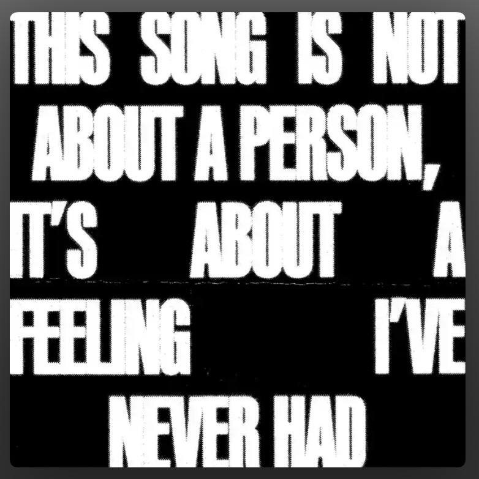
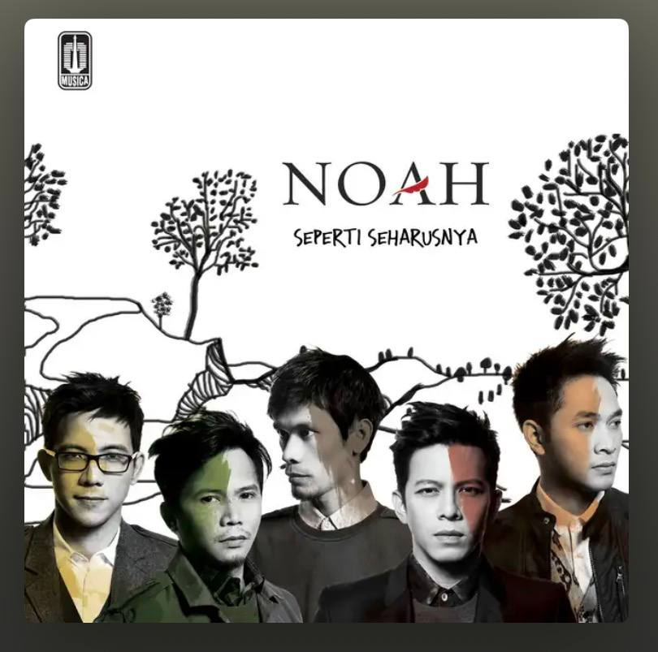
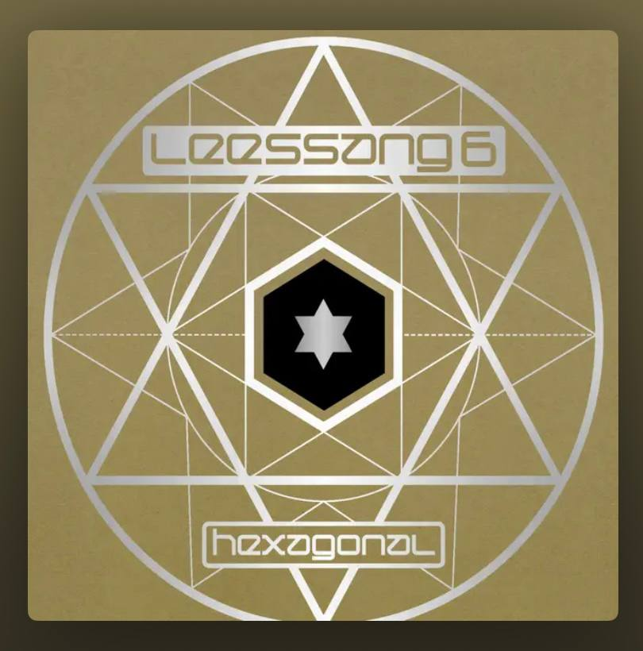
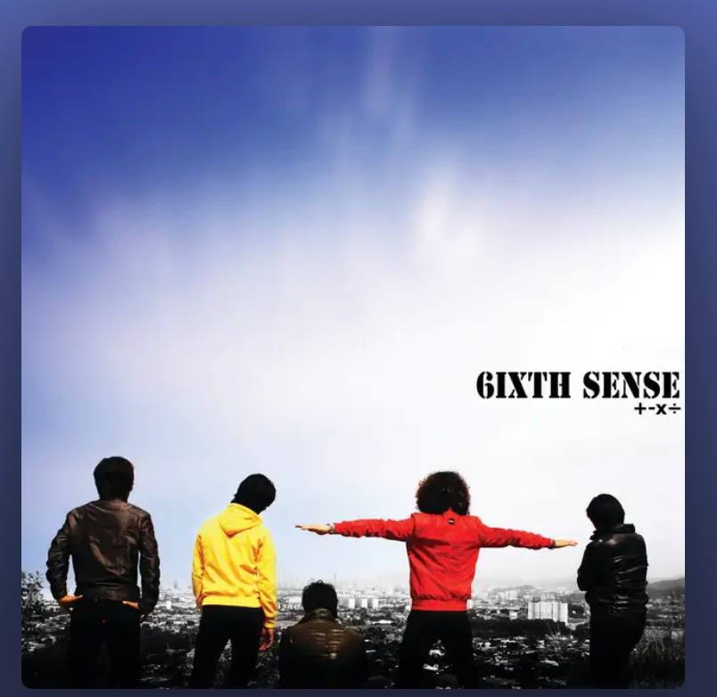
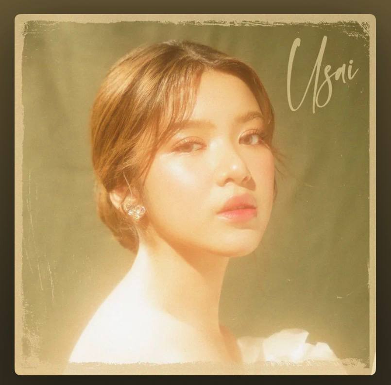
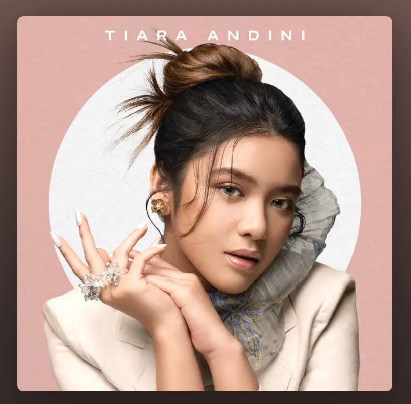
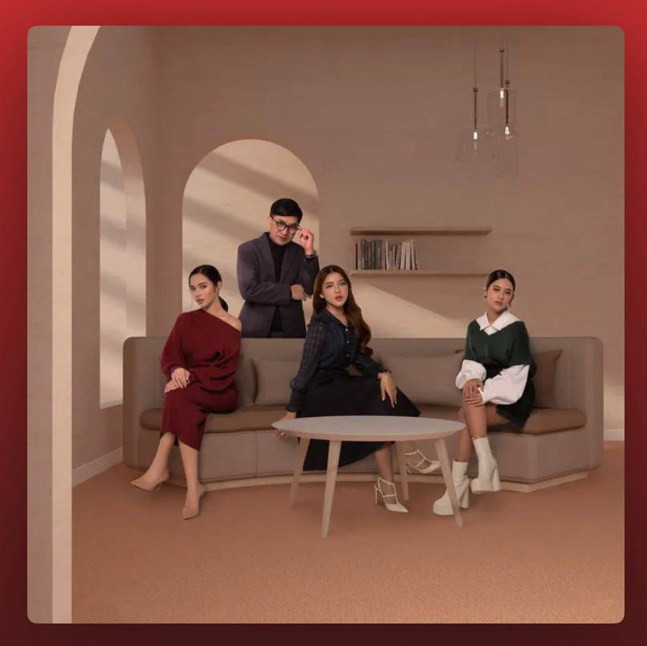
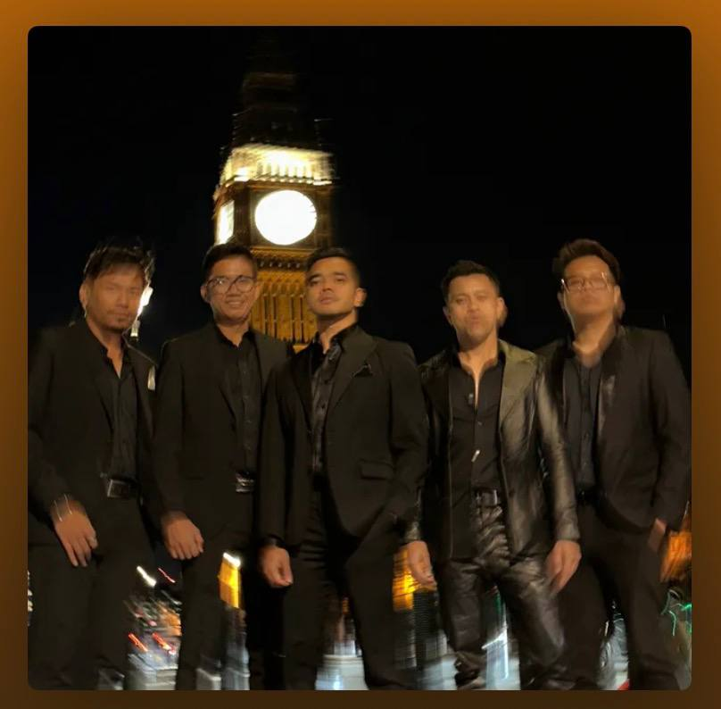

My hobbies are more than distractions, they're the only places where my mind goes quiet and the darkness feels alive in a beautiful way.
Gaming became my escape when reality felt too heavy. Every late night with my PS5 feels like entering another world where stress disappears for a while. My favourite game is Marvel Spider-Man 2 because it reminds me that even broken people still keep moving through the darkness.
Badminton teaches me discipline, focus, and patience. The sound of the shuttle hitting the racket feels calming in a strange way. Every match is not only about winning, but also about fighting against my own limits.
Riding my custom GPX Legend 150 during quiet nights gives me peace that words cannot explain. The cold wind, empty roads, and engine sound feel like therapy for my tired mind.
Music understands emotions that people fail to notice. These are some songs that stay with me during quiet nights and dark moments.

Charlie Puth

Noah

Lessang FEAT. Jung In

6itxh Sense
Lyodra
Dayang Nurfaizah X Faizal Tahir X Tuju X Yonnyboii

Tiara Andini

Tiara Andini

Yovie Widianto, Lyodra, Tiara Andini, Ziva Magnolya

Alif Satar and The Locos